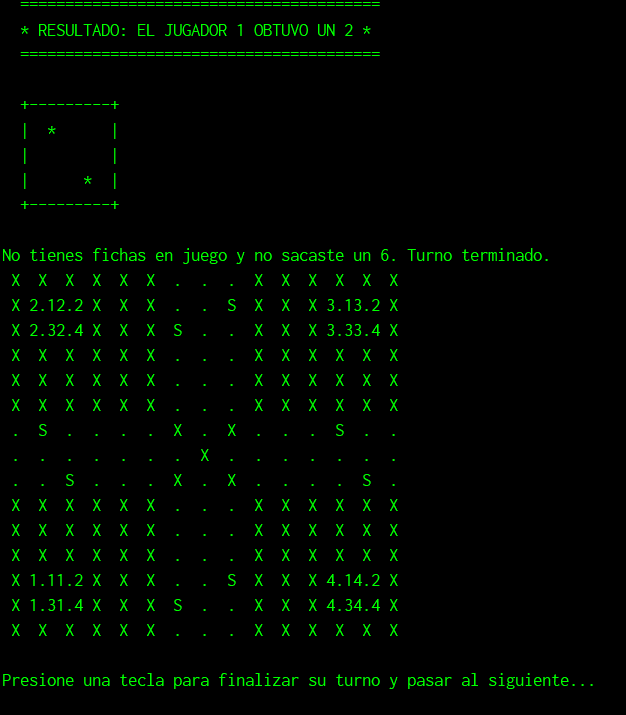
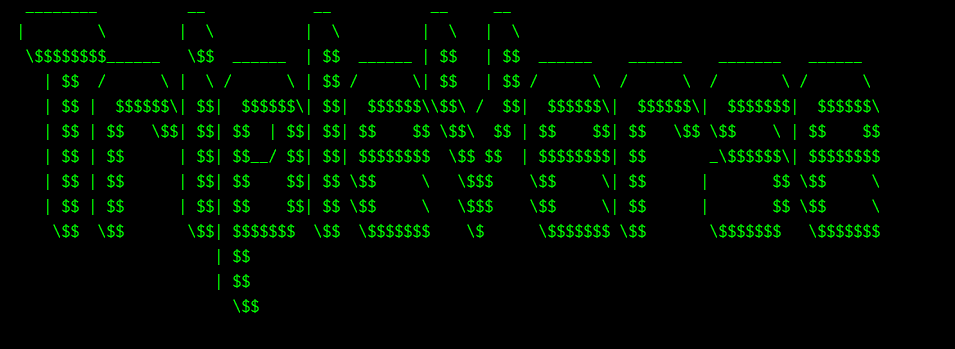
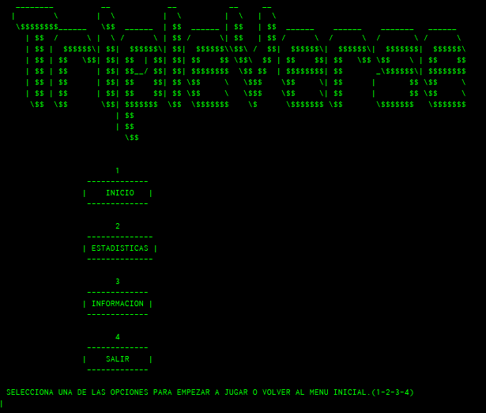
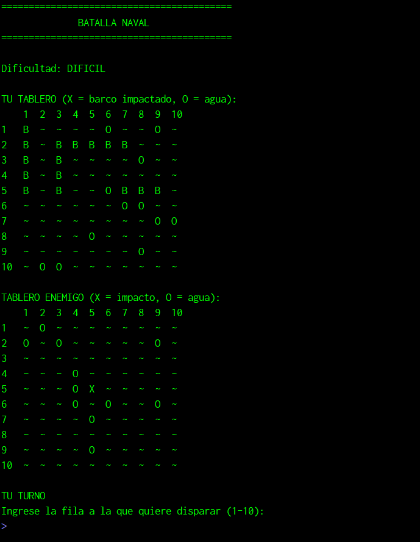
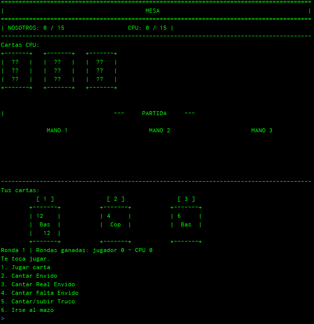

Ludo

Objetivo: llevar las cuatro fichas hasta la meta.
Lógica: tablero 15 × 15, tiradas de dado, posiciones seguras, capturas y recorrido circular.

Colección de juegos en PSeInt
Proyecto final · 2026
LABORATORIO 1601 · UTN-INSPT
TripleVerse es una colección de juegos creada íntegramente en PSeInt. Integramos Ludo, Batalla Naval y Truco en un mismo programa que se controla desde un menú principal.
El proyecto nos permitió aplicar estructuras de control, funciones, subprocesos, vectores, matrices y validación de datos.
Conocer los juegos
Cada juego tiene reglas diferentes, pero los tres comparten el mismo menú principal.

Objetivo: llevar las cuatro fichas hasta la meta.
Lógica: tablero 15 × 15, tiradas de dado, posiciones seguras, capturas y recorrido circular.

Objetivo: hundir todos los barcos del rival.
Lógica: matrices de 10 × 10, coordenadas, disparos, impactos y decisiones de la CPU.

Objetivo: ganar las manos y alcanzar el puntaje establecido.
Lógica: 40 cartas, jerarquías, Envido, Truco, ReTruco y Vale Cuatro.
02 / MODOS DE JUEGO
La computadora se comporta de manera distinta según el juego y el nivel seleccionado.
Fácil: la CPU dispara a posiciones aleatorias, sin repetir tiros.
Difícil: después de acertar, busca en casillas vecinas para intentar hundir el barco.
Principiante: decisiones casi al azar.
Fácil: usa algunas estrategias sencillas.
Difícil: analiza cartas y cantos.
Experta: intenta usar la carta mínima necesaria para ganar y evalúa apuestas.
Contra la PC: una persona juega contra la computadora.
Con amigos: partida local de 2 a 4 jugadores.
En Ludo elegimos un modo de juego, no un nivel de dificultad.
Primero desarrollamos cada juego por separado. Después los unimos en un archivo principal y organizamos sus funciones para evitar que se mezclen los datos.
Validamos las opciones para que una letra o un número incorrecto no cierre el programa.
Segun opcionJuego Hacer
1:
EjecutarTruco
2:
EjecutarLudo
3:
EjecutarBatallaNaval
4:
salirJuego <- Verdadero
FinSegun
Tuvimos que transformar el número de posición de cada ficha en una casilla del tablero, respetando los recorridos y las posiciones seguras.
Programamos una CPU que, en dificultad difícil, recuerda un impacto y revisa las casillas de alrededor.
Representamos las cartas mediante números, establecimos su jerarquía y calculamos los puntos del Envido.
Unir las funciones de los tres juegos sin que los menús, las variables y las partidas se interfieran entre sí. Trabajamos en equipo y usamos GitHub para compartir el código.
Somos tres estudiantes. Cada uno desarrolló un juego y colaboró en la integración final de TripleVerse.
Desarrolló el tablero, las fichas, sus movimientos y las reglas del Ludo. Participó en la organización del repositorio y las pruebas de integración.
Desarrolló el tablero, la colocación de barcos, el sistema de disparos y los niveles de dificultad de la computadora.
Programó las reglas del Truco, las decisiones de la CPU, los menús y las estadísticas. Integró los tres juegos en el proyecto final.